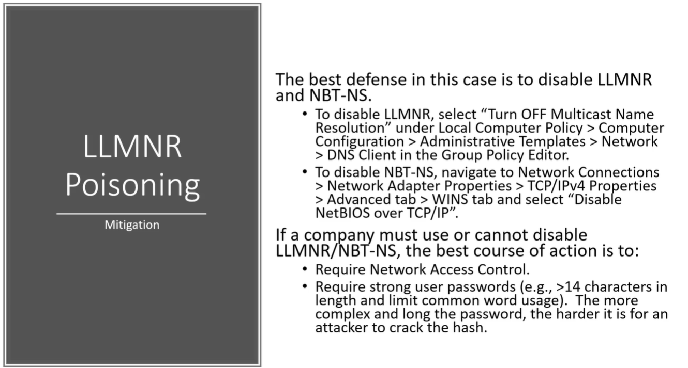

The best defense is to diable LLMNR but we have to not only disable LMNR but also have to disable NBT-NS
Cuz if DNS fails it goes to LMNR and if LMNR fails it goes to NBT-NS.
If the Client is not able to disable it or Refuses to do so.................
Second option is to tell them to enable the network access control (i.e. We can't just go and plug into any port on your network and gain access. It is going to look for a MAC address and say is this
MAC address belong to you and should we allow it.)
This is help to stall the attack from happening
And the last thing is to have Strong Password Policy.
40 character password is the best but should be atleast longer than 14 charaters.
